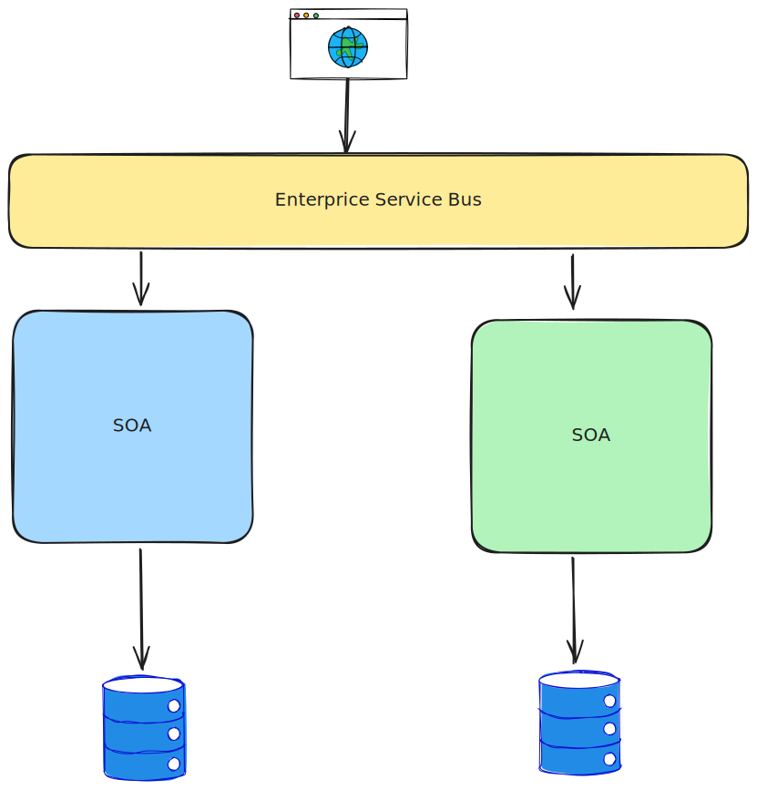

Arquitectura SOA
Luis Arturo Munguía Valdés
luis.munguia.valdes@banorte.com
Definición de SOA: Arquitectura de software que permite la creación de aplicaciones mediante la combinación de servicios reutilizables.
Objetivos:
- Promover la interoperabilidad.
- Fomentar la reutilización de servicios.
- Mejorar la agilidad empresarial.
Principios Fundamentales de SOA
- Servicios Autónomos: Cada servicio es independiente y realiza una función específica.
- Interoperabilidad: Servicios pueden interactuar a través de diferentes plataformas y lenguajes.
- Reutilización: Servicios diseñados para ser utilizados en múltiples aplicaciones.
Componentes Clave de SOA
Componentes Clave de SOA
- Servicios: Funcionalidades discretas accesibles a través de una red.
- Contratos de Servicio: Describen las capacidades, interfaces y políticas de los servicios.
- Bus de Servicios Empresariales (ESB): Facilita la comunicación entre servicios.
- Registro de Servicios: Repositorio donde se publican y descubren los servicios.
Beneficios de SOA

Desafíos y Consideraciones

Casos de Uso y Ejemplos
- Industria Bancaria: Servicios para transacciones, gestión de cuentas y autenticación.
- E-commerce: Servicios de pago, gestión de inventario y procesamiento de pedidos.
- Salud: Servicios para gestión de pacientes, historial médico y facturación.
Buenas Prácticas
- Diseño de Servicios Granulares: Crear servicios que realicen funciones específicas y bien definidas.
- Documentación Clara: Mantener contratos de servicios bien documentados.
- Pruebas Rigurosas: Asegurar la calidad y fiabilidad de los servicios mediante pruebas exhaustivas.
Conclusión y Preguntas
Resumen: SOA como enfoque para mejorar la flexibilidad, reutilización y eficiencia en el desarrollo de software.